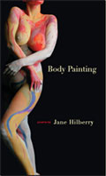

Bibliography
- Body Painting, Red Hen Press, 2005
- The Erotic Art of Edgar Britton , Ocean View Books, 2001
- Bad Girls (chapbook), The Pearl Press, 1997
- The Girl with the Pearl Earring , The Press at Colorado College, 1989; reprinted by JonesAlley Press, 1995
- In the Light of the Gooseneck Lamp , with Conrad Hilberry, Aralia Press (forthcoming)
- “In Arabic” and “Blizzard.” The Women’s Review of Books, Fall 2005.
- “The Car Salesman” and “The Moment.” The Hudson Review, Fall 2003.
- “The Intruder” and “Sand,” The Journal ( Ohio State University), Autumn 1999.
- “Crazy Jane Defaults on Her Loan,” Many Mountains Moving, Summer 2000.
- “The Moment.” Western Wind. Ed. David Mason and John Frederick Nims. McGraw-Hill, 2005.
- “Crazy Jane Goes to Painting Class.” A Fierce Brightness: Twenty-
- Five Years of Women’s Poetry. Calyx Books, 2002.
- “Elegant.” Inhabiting the Body: A Collection of Poetry and Art by Women Ed. Nina Corwin and Mary H. Ber. Moon Journal Press, 2002.
- “Crazy Jane Meets a Bear.” Grrrrr (an anthology of poems about bears). Arctos Press, Sausalito CA, 2000.